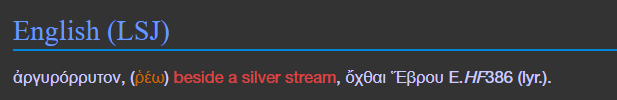
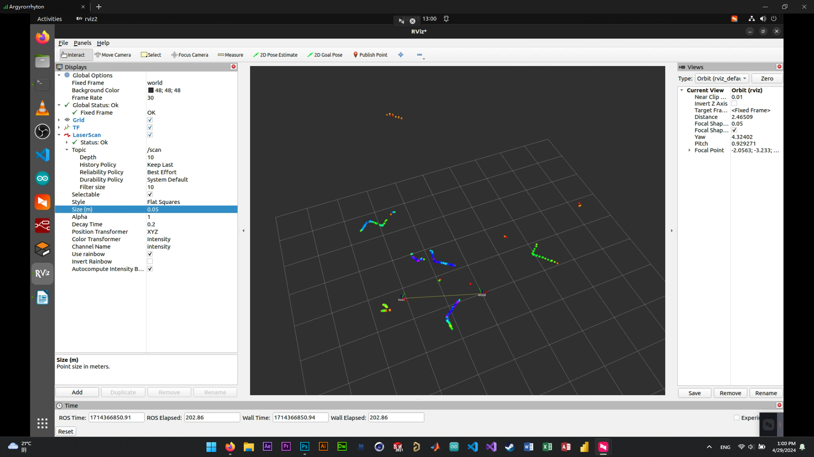
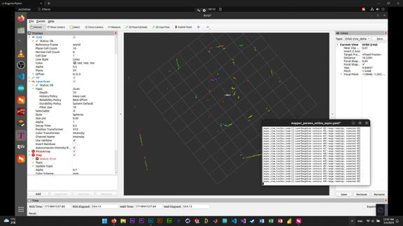
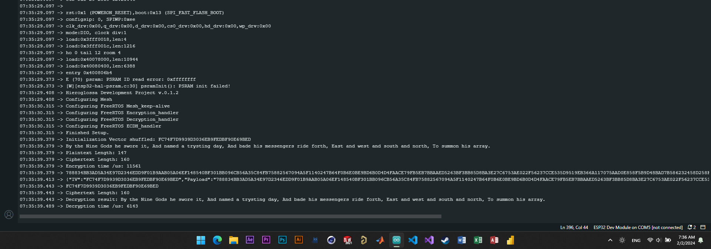
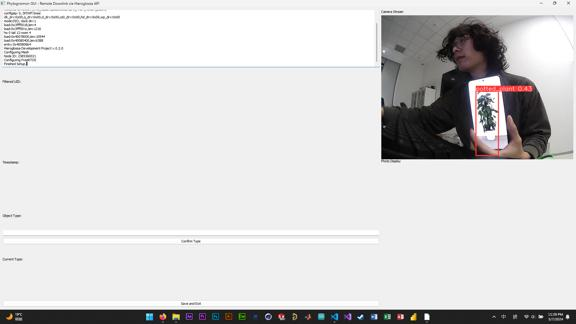
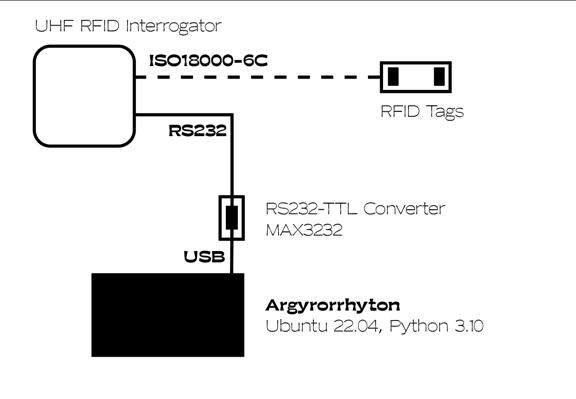
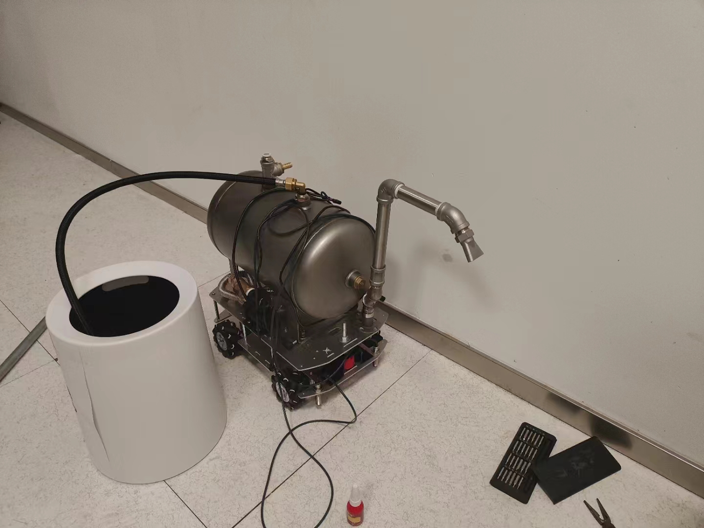
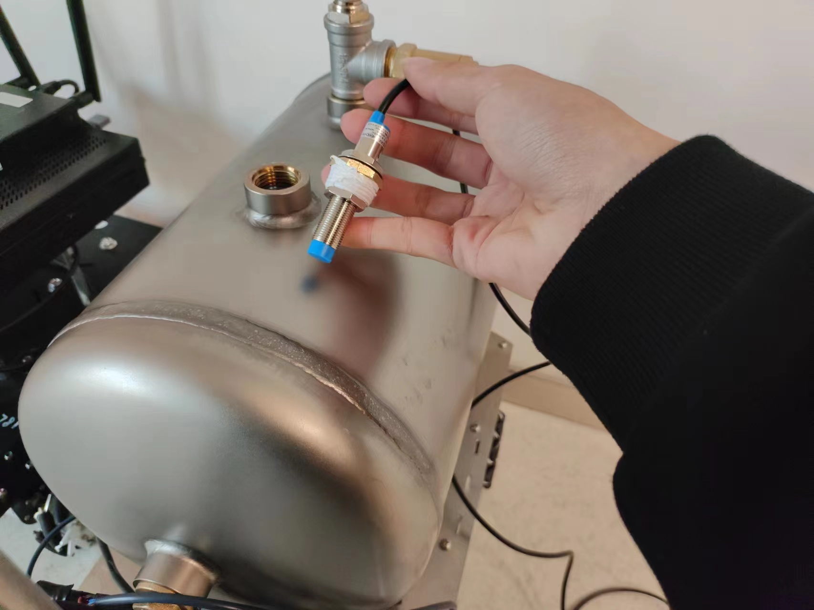
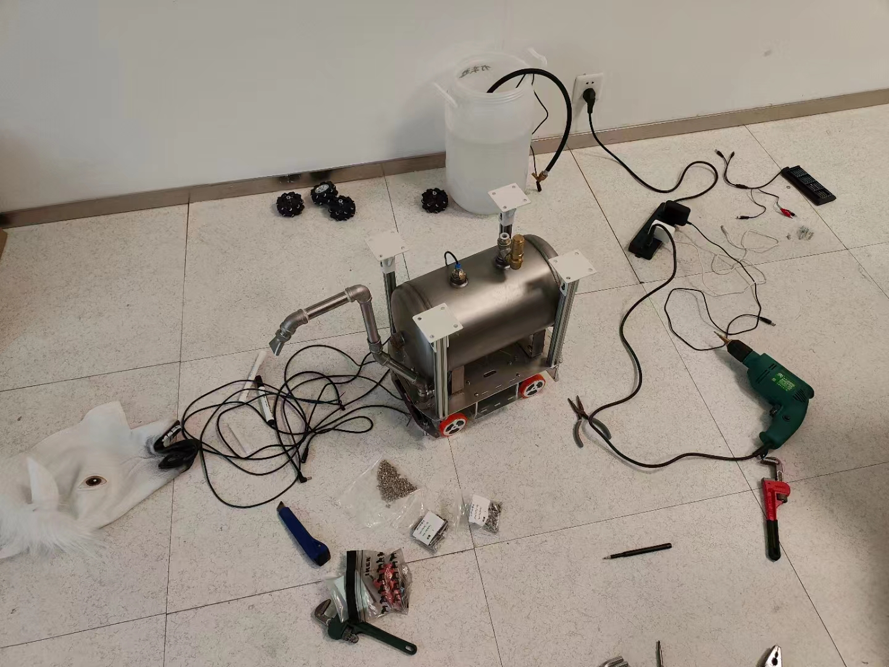

Etymology
Argyrorrhyton - the Silver Rhyton Cup
Per my personal naming tradition, my software projects are codenamed in Ancient Greek or Latin, usually with liturgical connotations.
The project is the third iteration of an irrigation robot project.
It is named after the Ancient Greek word "argyrorrhyton" (ἀργυρόρρυτον), which is a compound word derived from two components:
The first part of the word, "argyros," is an adjective meaning "silvery" or "made of silver.
The second part, "rhyton," is a noun referring to a specific type of ancient Greek libation vessel. A rhyton was a distinctive container made from ceramic, metal, or even horn, with one end shaped like an animal's head or a similar design, and the other end being the opening from which the liquid was consumed.
Therefore, the word "argyrorrhyton" (ἀργυρόρρυτον) literally means "a silver rhyton" or "a rhyton made of silver." It refers to a particular type of ancient Greek drinking vessel crafted from silver.
The word can also be analyzed as a compound adjective of "argyros" (silver) and "rhytos" (flowing or pouring), declined in the neuter gender.
The source material given is a citation from The Liddell, Scott, Jones Ancient Greek Lexicon (LSJ).
The word argyrorrhytos, -on is attested in Euripides' play "Helen" line 386, describing a location "beside a silver stream" specifically referencing the banks of the river Hebrus.
H. G. Liddell, R. Scott, and H. S. Jones, "ἀργυρόρρυτος," A Greek-English Lexicon.
Aesthetics
I would like to thank Ms. Longdan Chen M.A. from Loughborough University, Mr. Wenhao Huang from the University of Liverpool, for providing helpful feedbacks on my design aesthetics.
Graphics Design
Industrial Design
I could really use a B.A. degree.
Introduction
—'O stream!
Whose source is inaccessibly profound,
Whither do thy mysterious waters tend?
Thou imagest my life.
—— Alastor, or the Spirit of Solitude, Percy Bysshe Shelley
Technology
The convergence of Light Detection and Ranging (LIDAR), Simultaneous Localization and Mapping (SLAM), Robot Operating System 2 (ROS2), and lightweight machine vision like YOLOv8 is enabling a new era of cost-effective, intelligent robotic solutions. This project presents "Argyrorrhyton" - an autonomous robot that integrates these cutting-edge technologies to navigate indoor office environments and autonomously locate and water houseplants.
Harnessing LIDAR for precision mapping and SLAM algorithms for localization, Argyrorrhyton constructs 2D environmental maps to autonomously navigate corridors and rooms. The open-source ROS2 framework provides a modular software architecture, integrating sensor data, control algorithms, and IoT connectivity. Onboard YOLOv8 enables efficient vision-based detection of houseplants in real-life scenarios on embedded hardware. In addition, an encrypted wireless data interchange network is established between the server computer and the microcontrollers to provide electrical isolation between locomotion and control systems.
Methodology
The project is iterated 3 times.
Vision System: Phytomantis
The clouds seem colourless, and even joy is rather sorrowful there; but fountains of fresh water spring out of the rocks, and the eyes of the young girls are like the green fountains in which, with their beds of waving herbs, the sky is mirrored.
—— Prayer on the Acropolis, Ernest Renan
Implementing Computer Vision with MobileNetV2 SSD
In my FYP proposal study, it is envisioned that the computer vision model used will be MobileNetV2 SSD, citing its lightweight capacities suitable for deployment on edge devices. However, preliminary attempts to train a MobileNetV2 SSD inference model using a dataset of 32 images, courtesy of Edgeimpulse.com, is deemed inconvenient to use, due to model hallucinations and other considerations such as Edgeimpulse only provides free CPU training and the wrapper function is written in C++ rather than Python. These restrictions discourages me from using MobileNetV2 SSD as the vision algorithm for the project.
Instead, I resorted to using YOLOv8, which is a potent vision algorithm maintained by Ultralytics, and can be trained on GPU locally using standard YOLO datasets on the pyTorch framework.
Implementing Computer Vision with YOLOv8n
To enable real-time perception of houseplants for targeted irrigation, an on-board vision system utilizing the lightweight YOLOv8n object detection model was developed. A dataset of 914 houseplant images from Aspidistra and Epipremnum species was collected by extracting frames from videos recorded by a robotic vehicle in indoor environments of a local university, simulating real-life operating conditions. The dataset was further augmented to 2113 images, with 1893 for training and 190 for validation, using automated labeling on Roboflow.com and preprocessing techniques like resizing and noise introduction. Transfer learning was employed by initializing YOLOv8n with pre-trained weights and the model is trained locally. However, overfitting was observed around the 60th iteration due to limited dataset size and diversity, highlighting the need for further optimization strategies to improve generalization capabilities.


Early stopping is eventually invoked to prevent overfitting.

Navigation System: Ombropompon
"Yet mark those trees, two miles away,
All clustered in a clump:
If you could trot there twice a day,
Nor ever pause for rest or play.
In the far future — Who can say?——
You may be fit to jump."
—— Sylvie and Bruno Concluded, Lewis Carroll
Implementing SLAM and Pathfinding with SLAM Toolbox and Nav2 SMAC (A* Algorithm)
Precise robot localization and mapping leveraged Google Cartographer SLAM integrated with ROS2, utilizing a planar LIDAR for forward scanning. SLAM maps were visualized in Rviz2 along with the robot's trajectory for monitoring performance. The vision system's polar houseplant coordinates were transformed to Cartesian positions on the SLAM-derived maps. These global houseplant locations served as waypoints for ROS2 Nav2's SMAC planner to compute obstacle-free navigation routes across the field, dynamically adjusting with new map data, enabling autonomous precision irrigation of detected plants.




Encrypted Ad-hoc WSN Data Interchange System: Hieroglossa
By the Nine Gods he swore it,
And named a trysting day,
And bade his messengers ride forth,
East and west and south and north,
To summon his array.
—— Lays of Ancient Rome, Thomas Babington Macaulay
To ensure secure and reliable communication between the mainframe computer and distributed microcontrollers, an encrypted wireless sensor network (WSN) architecture was implemented, codenamed Hieroglossa. Due to it being an unpublished project under active development, this section will only delve into its functions briefly.
Architecture
The Hieroglossa WSN comprised the robot computer mainframe running the daemon, and its coordinator node acting as the base station, along with several microcontroller nodes interfaced to sensors and actuators like pumps and motors. This decentralized topology enabled modular expansion of functionality, as well as physical isolation from single-point electrical failures. The Hieroglossa relies on FreeRTOS running on ESP32 microcontrollers, and publishes data over WiFi mesh network to the coordinator node connected to the Linux mainframe. The individual keys are exchanged after each pairing over ECDH. The data is encrypted in AES-128 and the variables are formatted in JSON.
The Daemon
The Hieroglossa daemon decrypts and parses the data packets delievered over the mesh network, reading from the coordinator node through Linux serial port. This protocol decodes JSON messages, parsing variables and broadcasting them as ROS2 topics for other daemons to use. It can also subscribe to ROS2 topics and broadcast them in encrypted message strings.

RFID Houseplant Management Database: Phytognomon
The wither'd Misses! how they prose
O'er books of travell'd seamen,
And show you slips of all that grows
From England to Van Diemen.
—— Amphion, Alfred Tennyson
Phytognomon is the RFID reader and database system recording the information of irrigated plant instances. The database daemon records time, location (ROS2 odometry transform) and the tag UID of the irrigated plant in a CSV form. It is accompanied with a GUI to view and manipulate the system.
It will be further integrated with the other daemons to cooperate in decision-making.



Hardware Assembly





Acknowledgements
Revering, supplicating for divine patronage
仰 祈 靈 澤
—— The Book of Southern Qi 《南齊書》
I would like to extend my gratitude to all the people who have helped me during the writing of this dissertation.
My sincere gratitude goes first and foremost to my supervisor, Dr. Hadyan Hafizh, without whose devotion this dissertation would not have been possible. He has helped me revise the writings and oversee the experiments, especially during winter holidays. His dedication to my project kept me confident during the course of my Final-year Project.
I am profoundly grateful to Dr. Muhammad Ateeq for his willingness to take over the supervision of my project and guide my writing during the final crucial month. His timely intervention and invaluable mentorship following Dr. Hafizh's resignation ensured that I received the necessary support and direction to bring this dissertation to fruition.
I would like to extend my sincere gratitude to Prof. Miguel Baptista Nunes, the esteemed former Dean of the School of Internet of Things, for his invaluable support and contributions to my research project. His generous allocation of research grants provided the crucial financial backing needed to bring my project to fruition. His vision and support have played a pivotal role in turning my ideas into tangible reality.
I am forever indebted to my father, Fang Tao, and my mother, Gao Yue'e, for their unwavering financial support and emotional encouragement throughout my college years. Their sacrifices and belief in me provided the foundation for this achievement. I would also like to commemorate my late paternal grandfather, Fang Guocheng, a retired headmaster whose passion for education inspired me from an early age. His dedicated involvement in nurturing my academic pursuits since elementary school left an indelible mark. While he is no longer with us, I hope the tiding of my graduation brings him solace and pride in the Great Beyond. This milestone is a testament to the values he instilled in me. Their collective love, guidance, and provisions have made this journey possible. I am eternally grateful for my family's role in shaping who I am today.
I am grateful for the guidance from all the faculty members of the School of Internet of Things. I find their teachings highly practical and relevant to my project, especially:
- Dr. Dong Yuji, for his lessons helped my conceptualizing the idea of an irrigation robot.
- Dr. Karim Moussa, for his knowledge of Information Security.
- Dr. Matilda Issac, for her knowledge of Data Pipelines.
- Dr. Oh Bong-Hwan, for his knowledge of Networking Protocols.
- Dr. Zhang Wenzhang, for her knowledge of Wireless Sensor Network.
I would like to thank the Laboratory Technicians:
- Ms. Lyu Yingchao, especially, for personally taking care of my project and helping me process my requisition orders.
- Ms. Ge Shurong, Mr. Liu Changli, Ms. Xu Jie, for helping with laboratory maintenance.
I would like to thank the Teaching Assistants of the IOT School:
- Mr. Goonjur Medhav Kumar, Mr. Huang Sida, Ms. Yao Xueyan, Mr. Zhang Shiyao.
I am also grateful for the janitors, electricians, property management and security officers of the XJTLU campus building, whose names I do not know.
In addition to the people mentioned above, I am immensely grateful for the support and companionship of my other dear friends, who have been an integral part of this journey. Their presence has been a constant source of consolation in my depths of affliction. I would like to extend my heartfelt appreciation to the following individuals (though this list is by no means exhaustive):
An Jiabao, Chen Longdan, Chen Ruiyang, Chen Zuyu, Dong Yantong, Du Yucheng, Fang Zhixian, Feng Xiangcheng, Feng Yijia, Gao Shuyue, Gao Xingrui, He Zhiqiao, Heng Zhangyan, Hu Haoqi, Hua Sicheng, Huang Wenhao, Huang Xucheng, Jia Xiao'ang, Jin Gehui, Lei Mengyuan, Lei Xiaohaoyang, Li Jiale, Li Mengyuan, Li Shuang, Li Yikun, Li Zonghan, Lin Quanfu, Liu Yiran, Liu Zhiyu, Liu Zilin, Lyu Yize, Ma Kai, Ni Jiayue, Peng Yingbin, Qi Miao, Qin Haoran, Qing Yu, Qiu Yu, Qu Pengcheng, Shi Yuwei, Song Yuyang, Su Hanxiao, Sun Wenhao, Sun Zuoyu, TanLige, Tang Mingyu, Tang Yuqing, Tang Ziyue, Wang Jiayue, Wang Qingshi, Wang Yi, Wang Yiming, Wei Yixuan, Wei Zixiang, Wu Jingheng, Wu Yuesiyu, Xie Hailin, Xu Baixiang, Xu Jiang, Yang Dongyi, Yuan Jiawei, Zha Siyu, Zhang Bo, Zhang Hongbin, Zhang Ziming, Zhao Juanyi, Zhao Tianshi, Zhao Yuyan, Zhou Ziyu, Zhu Lenghan, Zhu Ruilin, Zhu Xiaoqing, Zuo Hongbo.
And countless others who have touched my life in countless ways.
Finally, I extend my sincere gratitude to you, the reader, for taking the time to engage with this dissertation. Your presence and attention are truly an honor. I am deeply appreciative of the patience and dedication you have invested in exploring my work. It is a humbling experience to have my research and ideas considered by scholars, peers, and intellectually curious individuals such as yourself. Thank you for being a part of this journey and for allowing me to share the culmination of my efforts with you.
Yisu Fang
方 奕甦